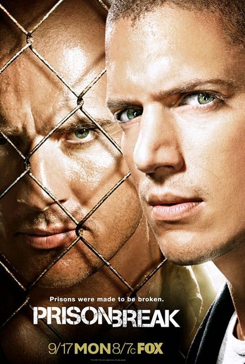

Merhaba, ben Umut Burak AYDEMİR. 30 yaşındayım ve istanbul'da yaşıyorum. 2019 yılından beri mimar olarak çalışmaktayım. Dizi ve anime tutkunuyum. Kodluyoruz'un youtube'de yapmış olduğu bir video sayesinde 2022 yılının ağustos ayı itibari ile Web geliştirme öğrenmeye başladım.
Büyük Kaçış (Orijinal adı: Prison Break), ABD yapımı bir aksiyon dizisi.Dizi genel olarak işlemediği bir suçtan dolayı idam cezası almış Lincoln Burrows (Dominic Purcell)'u ve Lincoln'ün kardeşi Michael Scofield (Wentworth Miller)'ın kardeşini kurtarmak için tüm yasal yolların tükendiğini fark edip onu hapishaneden çıkarmak için bir kaçış planı yapması ve sonrasında gelişen olayları konu alır. Dizinin yapımcılığını Adelstein-Parouse Productions, Original Television ve 20th Century Fox Television işbirliğiyle üstlenmiştir.
